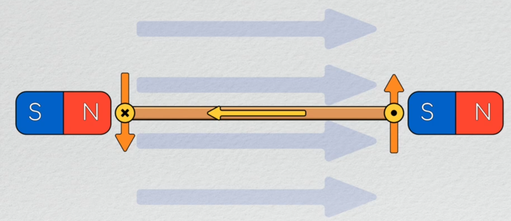

Rotating charges cause the magnetic fields produced in permanent magnets
Translating charged particles also produce magnetic fields
Example: a wire with charges moving through it will produce a magnetic field which revolves around it in a right-handed manner.
Creation of motion
Lorentz equation
$$
F = \underbrace{qE}_{F_1} + \underbrace{qv \times B}_{F_2}
$$
$$\begin{array}{cclc}
F &:& \text{Forces experienced by a charged particle} & [N] \\
E &:& \text{Electric field strength} & [?] \\
q &:& \text{Charge of the particle} & [C]
\end{array}$$
$F_1$
If a charged particle is in an electric field, it will experience a force $F_1$ proportional both to the electric field strength and its charge, applied along the direction of the electric field.
$F_2$
If a charged particle moves through a magnetic field, it will experience a force which is proportional to:
The strength of the magnetic field
The charge of the particle
The portion of its velocity which is perpendicular to the field
This force will be applied perpendicular to both the magnetic field and the velocity of the particle.
Force due to an existing magnetic field
Charges moving in a wire have some velocity in the direction of the current. If this wire exists in an external magnetic field which is not parallel to the current, each particle will experience a net force applied to it as a result.
The force on such a wire in a magnetic field is:
$$
F = Il \times B
$$
$$\begin{array}{ccl}
I &:& \text{Current} \\
l &:& \text{Length of the wire} \\
B &:& \text{Magnetic field strength}
\end{array}$$
This is how electrical current gets converted into a mechanical motion.
Example
If a closed square loop of wire with current flowing through it is placed in a magnetic field as shown below, the 2 sides will experience forces applied to them due to the magnetic field, in opposite directions.
and they will create a net torque on this loop of wire this will rotate the wire until the two forces eventually come to rest in line with each other noting that torque is the cross product of distance of application with the force being applied we can now quantify the torque on this loop of wire as the cross product of the diameter with the result of il cross B now we have an equation for the torque on a current

where this force becomes practically useful with motors is when we apply it to a lot of charged particles
moving through a wire.
now let's apply this idea to a closed loop of wire if we have a square loop with current running around it as shown here and we position it in a magnetic field the sides which are now shown is into and out of the page we'll have forces applied to them due to the magnetic field these forces will be in opposite directions and they will create a net torque on this loop of wire this will rotate the wire until the two forces eventually come to rest in line with each other noting that torque is the cross product of distance of application with the force being applied we can now quantify the torque on this loop of wire as the cross product of the diameter with the result of il cross B now we have an equation for the torque on a current carrying loop of wire in a magnetic field before we can move on to Faradays law looking at how motors work in practice we have to talk about one more physics principle Faraday's law what Faraday's law essentially says is that the flux which is another way to say the magnetic field going through the closed loop cannot change too quickly if an external magnetic field going through the loop changes an electromotive force which is a fancy way of saying voltage will be generated across the loop itself such that a current flows in it and induces a magnetic field which resists the changing magnetic flux for example if the external field increased in strength a field would be induced inside the wire which points opposite the direction of the external magnetic field in a motor this voltage is referred to as back electro-motive force or back EMF for short and it's fundamentally important for understanding the dynamic properties of motors another important thing to realize here is that changes in flux can happen due to changes in magnetic field strength but they can also occur due to changes in the orientation of the wire relative to the field imagine for example a loop of wire oriented such that a magnetic field points directly through it then if either the loop or the wire rotates such that this is no longer the configuration the magnetic field passing through the loop Goes Down and thus the flux decreases this change in flux would produce a back EMF in the coil of wire causing a current to flow thus generating a magnetic field rotational cases like this at the primary way we see back EMF generated in motors so that concludes most of the underlying physics ideas we need to get out of the way before we can start talking about how motors work in practice next time we'll start this by exploring how to make motors turn for more than 180 degrees at a time